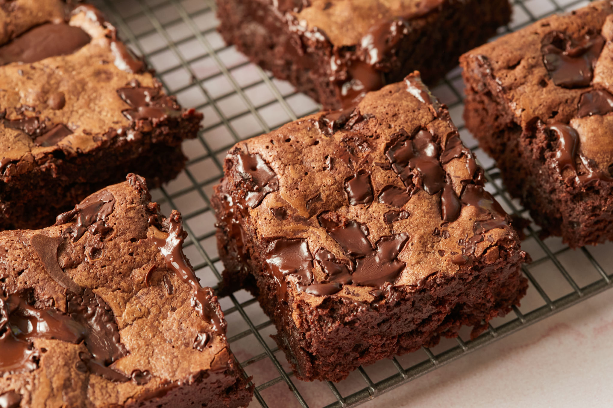

Recipes
Chewie Brownies

A chocolate brownie or simply a brownie is a square or rectangular chocolate baked confection. Brownies come in a variety of forms and may be either fudgy or cakey, depending on their density. Brownies often, but not always, have a glossy "skin" on their upper crust.
Chewie Brownies
Ingredients
- 1 cup (8oz/225g) butter, melted
- 2 tablespoons vegetable oil (coconut or canola)
- 1 cup plus 2 tablespoons (6 1/4oz/177g) dark brown sugar
- 1 cup plus 2 tablespoons (8 1/4oz/227g) white sugar
- 4 large eggs, (room temperature)
- 4 teaspoons vanilla extract
- 1 cup (5oz/142g) all purpose flour
- 1 cup (4oz/115g) good quality (unsweetened cocoa powder)
- 1 teaspoon salt
- 1 ½ cups (9oz/255g) bittersweet chocolate (roughly chopped)
Instructions
- Preheat the oven to 350°F (180°C) then butter and line an 8x8 inch baking tray with parchment paper and set aside.
- In a large bowl add the melted butter, oil, both sugars, eggs, and vanilla.
- Using an electric hand mixer, whisk for about 5 minutes at high speed until the mixture becomes very thick. You can also do this by hand but you will just really need to give it some welly.
- Over the same bowl sift in the flour and cocoa powder. Gently fold the dry ingredients into the wet ingredients until JUST combined (do NOT over mix). Fold in half of the chocolate chunks.
- Pour the batter into the prepared pan, then smooth the top. Generously top with the remaining chocolate chunks.
- Bake for 45-50 minutes, or until the center of the brownies no longer jiggles and is JUST set to the touch.
- Remove from the oven and allow to cool to room temperature before removing from the baking tray and slicing into 16 brownies. Enjoy!